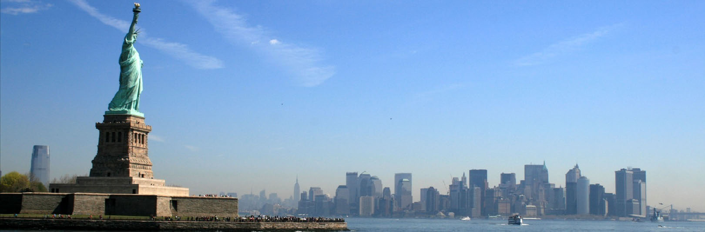

Attractions @ NYC

New York Pass
Free Entry to 80+ Attractions! An all-inclusive pass to New York’s top attractions, the New York Pass an exciting way to see everything you want without worrying about additional costs or waiting in line.

Top of the Rock Observation Deck
For a birds-eye view of New York City, head to the Top of the Rock Observation Deck, which features panoramic, open-air vistas from the top of Rockefeller Center.
9/11 Memorial Museum
Explore the history of the monumental World Trade Center and the aftermath of the September 11 attacks via fascinating yet devotional exhibits that feature photographs, videos and other large-scale pieces from the recovery effort

Empire State Building Observatory
The Empire State Building Observatory’s famous viewing deck offers breathtaking vistas of Manhattan and beyond from its lofty perch in one of New York City's most storied landmarks.
Madame Tussauds New York
It’s a cavalcade of stars in Times Square at Madame Tussauds New York, where all of your favorite celebrities are immortalized in wax.
The Metropolitan Museum of Art
One of the most famous museums in the world, the Metropolitan Museum of Art has more than two million works of art, from ancient Greek sculpture and Old Master paintings to works by Pollock and de Kooning.